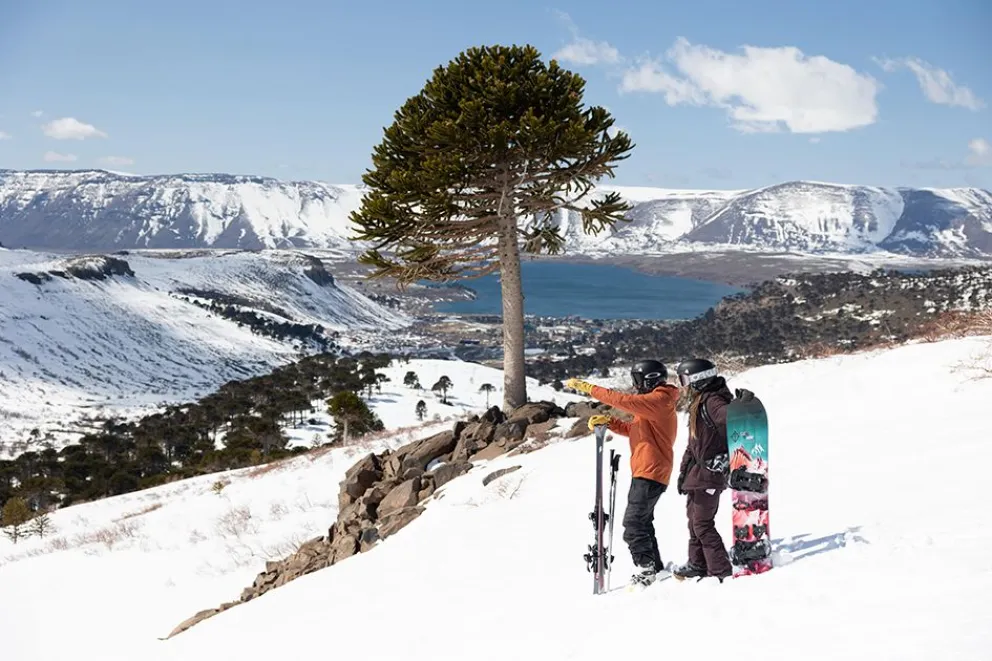

Temporada de Ski na PATAGÔNIA 2026: tudo o que você precisa saber
A contagem regressiva para o inverno já começou. Centros, preços e dicas para esquiar na Argentina e no Chile em 2026.

Datas de abertura 2026
| Centro | País | Abertura |
|---|---|---|
| Cerro Castor | 🇦🇷 Argentina | maio |
| Valle Nevado | 🇨🇱 Chile | 13 junho |
| Nevados de Chillán / La Parva | 🇨🇱 Chile | 18 junho |
| Cerro Bayo | 🇦🇷 Argentina | 18 junho |
| El Colorado / Corralco | 🇨🇱 Chile | 19 junho |
| Portillo | 🇨🇱 Chile | 21 junho |
| Cerro Catedral | 🇦🇷 Argentina | 29 junho |
| Chapelco | 🇦🇷 Argentina | 4 julho |
| Caviahue | 🇦🇷 Argentina | 15 julho |
🇦🇷 branco · 🇨🇱 azul
Argentina: os centros

O maior centro de ski da América do Sul. Vencedor do World Ski Awards por vários anos consecutivos.

Ambiente familiar e tranquilo perto do Parque Nacional Lanín. Um dos mais belos cenários naturais do circuito argentino.

O centro de ski mais austral do mundo. Neve seca garantida e vista para o Canal Beagle. A temporada mais longa da América do Sul.

O segredo mais bem guardado do Nahuel Huapi. Ideal para famílias que buscam um ambiente íntimo longe das multidões do Catedral.

O destino de menor custo do circuito. Neve em pó de altíssima qualidade, ambiente autêntico, sem multidões.

Ski ao pé de um vulcão ativo. A aldeia de Caviahue fica a metros das pistas — sem necessidade de carro ou transfer. A poucos quilômetros, as termas do Copahue são o complemento perfeito para o après-ski.
Chile: os centros

O maior resort de montanha perto de Santiago. Novidade 2026: Aconcagua Ski Residences — 39 unidades de luxo com ski-in/ski-out.

Histórico e exigente. Considerado por muitos profissionais como um dos melhores do mundo. Atmosfera íntima, terreno desafiador.

Junto com Valle Nevado formam o triângulo de neve mais acessível a partir de Santiago. Ótima relação custo-benefício para o esquiador intermediário.

O único destino que combina pistas de ski com termas naturais. Um banho termal após um dia na montanha o torna único na região.
Comparativo de preços: diária de ski
| Centro de Ski | Diária adulto | Aluguel de equipamento | Total por dia |
|---|---|---|---|
| Cerro Catedral 🇦🇷 | a partir de $160.000 ARS | $55.000–$70.000 ARS | ~$215.000–$230.000 ARS |
| Cerro Castor 🇦🇷 | $102.000–$150.000 ARS | $55.000–$70.000 ARS | ~$157.000–$220.000 ARS |
| Chapelco 🇦🇷 | $120.000 ARS | $55.000–$70.000 ARS | ~$175.000–$190.000 ARS |
| La Hoya 🇦🇷 | ~$80.000 ARS equiv. | $55.000–$70.000 ARS | ~$135.000–$150.000 ARS |
| Caviahue 🇦🇷 | a confirmar | $55.000–$70.000 ARS | a confirmar |
| Valle Nevado 🇨🇱 | $65.000–$70.000 CLP | a partir de $29.900 CLP | ~$95.000–$100.000 CLP |
| Portillo 🇨🇱 | só pacotes semanais | incluído no pacote | a partir de USD 1.650/semana |
Preços verificados nos sites oficiais de cada centro, maio 2026. Portillo não vende ingresso avulso — opera apenas com pacotes semanais completos. La Hoya não publica preço diário; equivalente calculado sobre passe flex 5 dias ($400.000 ARS). Aluguel de equipamento: referência média, pode variar. Totais em moeda local.
Argentina ou Chile?
| 🇦🇷 Escolha a Argentina se… | 🇨🇱 Escolha o Chile se… |
|---|---|
| Quer o maior centro do continente | Quer infraestrutura moderna de nível mundial |
| Prefere uma experiência mais tradicional | Você vem de ou passa por Santiago |
| Orçamento é prioridade (La Hoya, Cerro Bayo) | A taxa de câmbio te favorece |
| Quer a temporada mais longa (Cerro Castor) | Busca luxo ski-in/ski-out (Valle Nevado) |